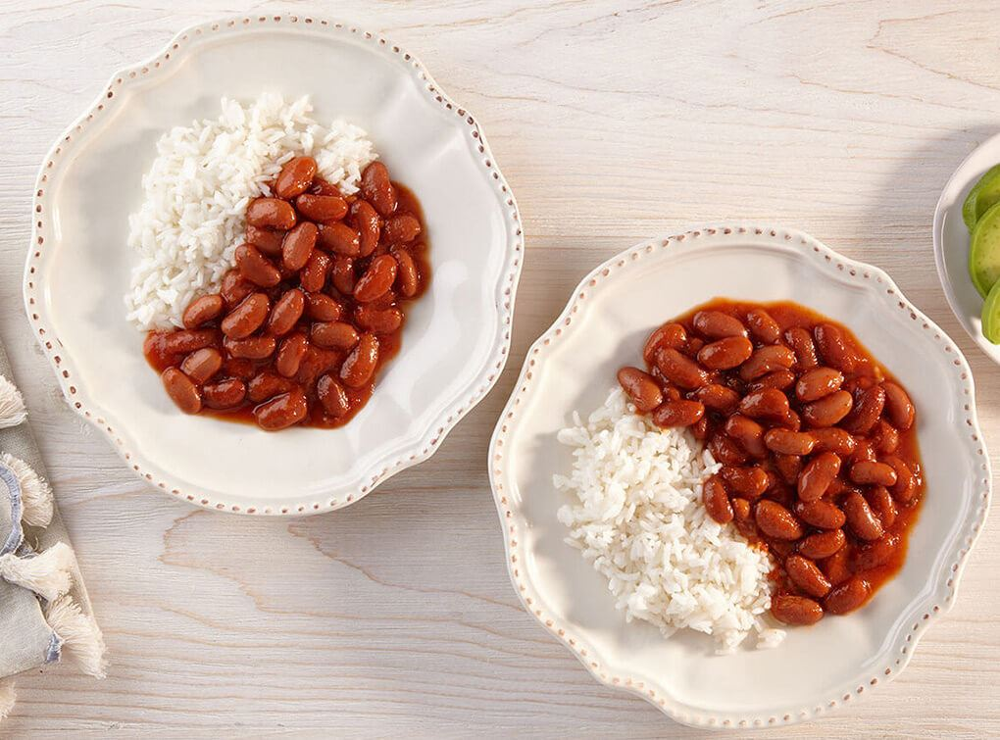

- 2 tazas de arroz
- 1 taza de habichuelas (judías o frijoles)
- 1 cebolla picada
- 2 dientes de ajo picados
- 1 pimiento verde picado
- 1 pimiento rojo picado
- 2 tomates picados
- 1 hoja de laurel
- 1 cubito de caldo de pollo
- 1 cucharadita de comino
- 2 cucharadas de aceite vegetal
- Sal y pimienta al gusto
- 4 tazas de agua

Instrucciones:
- 1. Enjuaga las habichuelas y cocínelas en una olla con agua hasta que estén tiernas. Escúrrelas y reserva.
- 2. En una cacerola grande, calienta el aceite a fuego medio. Sofríe la cebolla, el ajo, los pimientos y los tomates hasta que estén tiernos.
- 3. Agrega las habichuelas, el cubito de caldo, la hoja de laurel, el comino, la sal y la pimienta. Cocina por unos minutos.
- 4. Añade el arroz y mezcla bien. Cocina por unos minutos más.
- 5. Agrega las 4 tazas de agua y lleva a ebullición. Reduce el fuego a bajo, tapa la cacerola y cocina durante 20-25 minutos, o hasta que el arroz esté cocido y haya absorbido el líquido.
- 6. Retira del fuego y deja reposar tapado por 5 minutos. Sirve caliente.